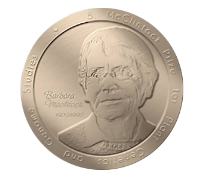

Awards
From the Maize Genetics Cooperation Board of Directors
Maize Genetics Awards:
The 2025 MGC Cooperator Awardees
Don McCarty, University of Florida
Karen Koch, University of Florida
Frank Hochholdinger, University of Bonn
Caroline Macron, University of Bonn
The 2025 MGC Leadership Awardee
- Shawn Kaeppler, University of Wisconsin
The 2025 M. Rhoades Early Career Awardee
- Erin Sparks, University of Missouri
The 2025 L. Stadler Mid-Career Awardee
- Sherry Flint-Garcia, USDA Agricultural Research Service
The 2025 R. Emerson Lifetime Awardees
Brian Larkins, University of Nebraska, passed away on January 19th.
Zac Cande, University of California Berkley, now retired
The Barbara McClintock Prize for Plant Genetics and Genome Studies

This award has been created to memorialize the unequalled contributions of Dr. McClintock through providing recognition to the most outstanding plant geneticists of the present era. In memory of the many contributions of Dr. McClintock, this Prize will be awarded each year to one or more of the most creative minds and productive scientists in the study of plant genome structure, function and evolution, including the analysis of gene regulation and epigenetics.
The 2025 Barbara McClintock Prize for Plant Genetics and Genome Studies has been awarded to Dr. Edward S. Buckler IV of United States Department of Agriculture - Agricultural Research Service (USDA-ARS) who will present a McClintock Prize Address on Friday, March 7, 8:20 pm CDT.
(See https://maizegdb.org/mgc/awards/ for details about each award)
NSF-funded support for maize genetics:

The National Science Foundation is supporting the 66th-68th Annual Maize Genetics
Meetings with a grant awarded on November 14th, 2023 (IOS-2329928). This conference
grant will support, Enhancing Institutional Access (EIA), and Disciplinary Breadth (DB) award programs. These programs broaden the participation of researchers with an interest in exploring research possibilities in maize genetics by providing funding to attend the meeting. These travel participants are paired with a team of mentors that included an early career scientist, an academic PI, and an industry or government scientist that engage with the awardees formally and informally before, during, and after the meeting. Throughout the meeting participants receive professional development training, and opportunities to engage directly with leaders in the field through organized meals with invited speakers. These experiences are vital catalysts for the careers of aspiring student and postdoc trainees. We appreciate the support from the National Science Foundation for this initiative and are excited about the potential for the grant to substantially advance and transform our community.
The 2025 Attendance/Travel Awards Program
The maize community offers several attendance and travel awards to encourage attendance at the Annual Maize Genetics Meeting (MGM). There are several programs that provide travel/attendance awards; e.g. increasing Disciplinary Breadth (DB), Expanding Institutional Access (EIA), and a general program to support first time attendees. Here are the awardees for 2025; please congratulate these scientists and welcome them to our famously hospitable conference!
| Undergraduate Student |
|---|
| Daisy Montero Ibarra, University of California - Davis |
| Maria Ximena Anleu Gil, UCD, Postdoctoral Mentor |
| Graduate Student | |
|---|---|
| Mariana Chavez, Montclair State University | Poster # 22 |
| Enameguono Olomuko, Purdue University | Poster # 34 |
| Sara Hafiza, Florida State University | Short Talk [T23] |
| Hank Bass, FSU, Faculty Mentor | Poster # 87 |
| Sebastian Mueller, Oregon State University | Poster # 158; Lightning Talk [L5] |
| Edward Fernandez, North Dakota State University | Poster # 174 |
| Hanna Pil, North Carolina State University | Poster # 202; Lightning Talk [L8] |
| Vitor Sagae, University of Florida | Poster # 238 |
| Shreejana KC, University of Delaware | Poster # 256 |
| Faculty | |
|---|---|
| Gwonjin Lee, West Virginia State University | Poster # 15; Lightning Talk [L28] |
| Beth Thompson, East Carolina University | |
| Veronica Justen, University of Wisc. - River Falls Poster | # 282 |
The Maize Genetics Meeting is supported in part by IOS Award #2329928 from the National Science Foundation, Plant Genome Research Program.
Broadening International Participation Awards
The 2025 Broadening International Participation Award program seeks to promote international attendance for researchers from countries that are historically under-represented at the Maize Meeting. This 2025 award program seeks to enrich the maize community and broaden the opportunities to learn about maize genetics by connecting with scientists in the maize genetics community, exploring potential collaborations, and developing career contacts. BIP awardees receive waived registration to the recorded talks and sessions.
| Research Scientists | Elena Andriunaite |
| Postdocs | Muhammad Zafar Iqbal |
| Graduate Students | Md Nazmul Hossain |